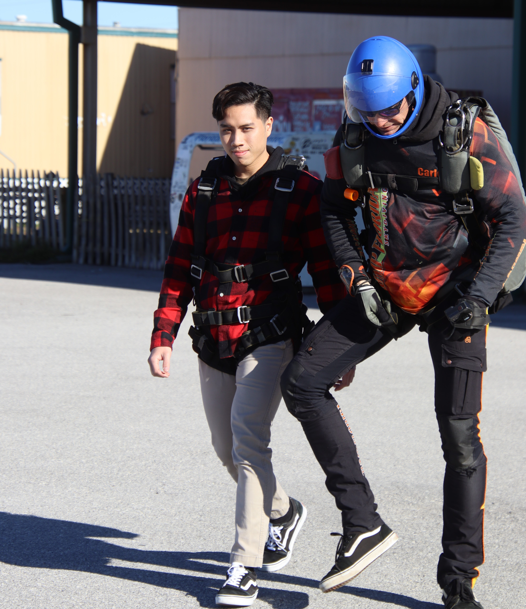

- Profile
- I am from Johor, the southernmost state in Malaysia, one of the countries in Southeast Asia. It is better known as the neighboring country of Singapore because they are rich and developed.
- I love experimenting stuff and doing on hands work, and maybe that explains my passion in engineering. Also, my father is also an engineer and my role model, which might relate to my interest in engineering.
- I aspire to be a well rounded person, not very into academics like a bookworm, and not really into sports like an athlete. I like to find balance in life because as people say, "A jack of all trades is a master of none, but oftentimes better than a master of one."
- Studies & Interests
- I am currently in my third year at the University of Wisconsin-Madison. I am majoring in Chemical Engineering, and could understand why it is ranked as one of the hardest majors, at least by the thought of other students.
- I considered to pursue my career in culinary, and plan to be a widely known chef like Gordon Ramsay, owning multiple restaurants. I have a huge passion in cooking, and eager to try new recipes. Giving people dishes that I've made means a lot to me. However, I realized that it requires more popularity and networking than skills, and decided that STEM might be a better and safer choice for me.
- Hobbies & Sports
- I try to balance myself between activities related to technology and nature when I have leisure time. I enjoy playing video games and watch technological-related content on YouTube, especially those from Linus Tech Tips.
- Similarly, I like spending my time outdoors. Cycling is one of my favorite things to do, especially in Madison which is known for its bicycle friendliness. During longer free time such as academic breaks, I love to go hiking. Grand Canyon, Yosemite, Rocky Mountain, and Devil's Lake are some of the parks that I have been to.
- I am quite good in badminton and futsal, and used to represent my high school in the district-level badminton tournament. Also, I used to play rugby as a flanker, but not in the United States since the difference in size is a big obstacle for me.